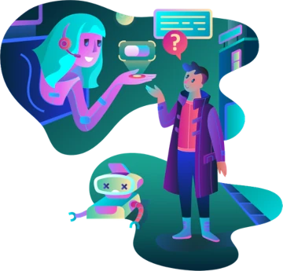
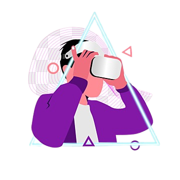
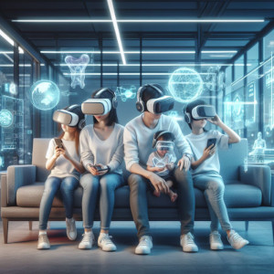

What is Metaverse?


The Metaverse is a term that refers to a three-dimensional computer-generated virtual space where users can interact with each other and a shared virtual environment in real-time. This idea has been explored in science fiction, video games, and is now becoming an emerging reality with advancing technology.
The concept of the Metaverse involves creating a persistent and expansive digital environment that may include virtual worlds, virtual reality, augmented reality, and other forms of digital experiences. In this space, users can create virtual representations of themselves, interact with other participants, engage in various activities, and even develop virtual economies.
Technology companies such as Facebook (now Meta), Google, Microsoft, and others are heavily investing in Metaverse development. The goal is to create a platform that goes beyond the limits of traditional virtual worlds, enabling a more immersive and collaborative experience.
The Metaverse has broad implications, not only in entertainment but also in areas such as education, remote work, commerce, and socialization. However, it's important to note that, as of my last knowledge update in January 2022, the Metaverse was still in development, and many of the concepts around it were evolving rapidly. I recommend checking updated sources for the latest information on the state of the Metaverse.
Interactions within the Metaverse

Interactions within the Metaverse can encompass a wide range of experiences, from social communication to professional collaborations and leisure activities. Here are some common forms of interaction in the Metaverse:
Virtual Socialization:
Voice/Text Chat - Real-time communication through voice or text chat with other users.
Virtual Gatherings - Participation in social events, parties, or meetings in virtual environments.
Professional Colaboration:
Virtual Meetings - Conducting work meetings, presentations, and project collaboration through virtual environments.
Virtual Workspaces - Utilizing virtual offices and work environments for remote collaboration.
Entertainment and Culture:
Virtual Shows and Events - Attending live concerts, conferences, and cultural events in virtual environments.
Virtual Cinema Rooms - Watch movies, videos, or presentations in shared virtual environments.
Games and Recreational Activities:
Multiplayer Games - Participate in online games with other users in virtual environments.
Recreational Activities - Engage in recreational activities such as virtual sports, outings, and adventures.
Education and Training:
Virtual Classes - Participate in educational lessons and training in virtual environments.
Professional Simulations - Training in simulated environments for specific professions.
Comerce and Virtual Economy:
Virtual Stores and Markets - Buying and selling products and services in virtual environments.
Cryptocurrency Transactions - Using cryptocurrencies to conduct transactions and virtual commerce.
Customed Experiences:
Avatar Customization - Creating and customizing virtual avatars for personal representation.
Custom Virtual Environments - Creating and sharing customized virtual environments.
Health and Wellness Activities:
Virtual Exercises - Participation in physical activities and exercises in virtual environments.
Meditation and Relaxation - Virtual environments designed to promote mental health and well-being.